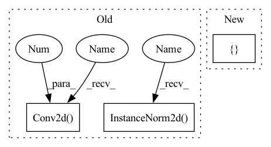

Pattern ID :10998

Before Change
nn.Conv2d(ngf*4, ngf*1, 3,1,1),
nn.InstanceNorm2d(ngf),
nn.LeakyReLU(0.2),
nn.Conv2d(ngf, ngf,1,1,0)
])
self.down3_1 = nn.Sequential(*[
nn.Conv2d(ngf*4, ngf*1, 3,1,1),
nn.InstanceNorm2d(ngf),
nn.LeakyReLU(0.2),
nn.Conv2d(ngf, ngf,1,1,0)
])
After Change
self.down2 = down(ngf, ngf*2)
self.down3 = down(ngf*2, ngf*4, pooling=False, dilation=True)
self.conv22 = nn.Sequential(*[
nn.Conv2d(ngf*2, ngf, 3,1,1),
nn.LeakyReLU(0.2),
nn.Conv2d(ngf, ngf, 3,1,1),
nn.LeakyReLU(0.2)
])
self.conv33 = nn.Sequential(*[
nn.Conv2d(ngf*4,ngf*2, 3, 1, 1),
In pattern: SUPERPATTERN
Frequency: 3
Non-data size: 3
Instances
Fragment ID: 37911426
Project Name: bcmi/slbr-visible-watermark-removal
Commit Name: 43e84b70895d28955496122816e50857863e5bfd
Time: 2022-01-04
Author: lj200820082007@163.com
File Name: src/networks/blocks.py
M Class Name: CFFBlock
N Class Name: CFFBlock
M Method Name: __init__(4)
N Method Name: __init__(4)
M Parent Class: nn.Module
N Parent Class: nn.Module
M File Name: src/networks/blocks.py
N File Name: src/networks/blocks.py
M Start Line: 367
M End Line: 381
N Start Line: 404
N End Line: 423
'>
Before Change
nn.Conv2d(ngf*4, ngf*1, 3,1,1),
nn.InstanceNorm2d(ngf),
nn.LeakyReLU(0.2),
nn.Conv2d(ngf, ngf,1,1,0)
])
self.down3_1 = nn.Sequential(*[
nn.Conv2d(ngf*4, ngf*1, 3,1,1),
nn.InstanceNorm2d(ngf),
nn.LeakyReLU(0.2),
nn.Conv2d(ngf, ngf,1,1,0)
])
After Change
self.down2 = down(ngf, ngf*2)
self.down3 = down(ngf*2, ngf*4, pooling=False, dilation=True)
self.conv22 = nn.Sequential(*[
nn.Conv2d(ngf*2, ngf, 3,1,1),
nn.LeakyReLU(0.2),
nn.Conv2d(ngf, ngf, 3,1,1),
nn.LeakyReLU(0.2)
])
self.conv33 = nn.Sequential(*[
nn.Conv2d(ngf*4,ngf*2, 3, 1, 1),
'>
Fragment ID: 37911427
Project Name: bcmi/slbr-visible-watermark-removal
Commit Name: 43e84b70895d28955496122816e50857863e5bfd
Time: 2022-01-04
Author: lj200820082007@163.com
File Name: src/networks/blocks.py
M Class Name: CFFBlock
N Class Name: CFFBlock
M Method Name: __init__(4)
N Method Name: __init__(4)
M Parent Class: nn.Module
N Parent Class: nn.Module
M File Name: src/networks/blocks.py
N File Name: src/networks/blocks.py
M Start Line: 367
M End Line: 381
N Start Line: 404
N End Line: 423
'>
Before Change
class UnetDown(nn.Module):
def __init__(self, in_size, out_size, normalize=True, dropout=0.0):
super(UnetDown, self).__init__()
layers = [nn.Conv2d(in_size, out_size, 4, 2, 1, bias=False)]
if normalize:
layers.append(nn.InstanceNorm2d(out_size))
layers.append(nn.LeakyReLU(0.2))
if dropout:
layers.append(nn.Dropout(dropout))
After Change
class UnetDown(nn.Module):
def __init__(self, in_size, out_size):
super(UnetDown, self).__init__()
layers = [Conv3(in_size, out_size), nn.MaxPool2d(2)]
self.model = nn.Sequential(*layers)
def forward(self, x):
'>
Fragment ID: 37911430
Project Name: cloneofsimo/mindiffusion
Commit Name: c84221717042f2235d39ab9be621950aa55208f2
Time: 2022-04-15
Author: cloneofsimo@gmail.com
File Name: mindiffusion/unet.py
M Class Name: UnetDown
N Class Name: UnetDown
M Method Name: __init__(3)
N Method Name: __init__(5)
M Parent Class: nn.Module
N Parent Class: nn.Module
M File Name: mindiffusion/unet.py
N File Name: mindiffusion/unet.py
M Start Line: 10
M End Line: 18
N Start Line: 29
N End Line: 31
'>
Before Change
// Initial convolution block
down_layers = [nn.ReflectionPad2d(3),
nn.Conv2d(in_channels, 64, kernel_size=7, stride=1, padding=0, bias=False),
nn.InstanceNorm2d(64),
nn.ReLU(inplace=True)]
// Downsampling
down_layers += [nn.ReflectionPad2d(1),
nn.Conv2d(64, 128, 3, stride=2, padding=0, bias=False),
nn.InstanceNorm2d(128),
nn.ReLU(inplace=True),
nn.ReflectionPad2d(1),
nn.Conv2d(128, 256, 3, stride=2, padding=0, bias=False),
nn.InstanceNorm2d(256),
nn.ReLU(inplace=True)]
// Down sampling residual blocks
After Change
nn.Linear(256, 256, bias=False),
nn.ReLU(inplace=True)]
else:
fc = [nn.Linear(image_size * image_size * 16, 256, bias=False),
nn.ReLU(inplace=True),
nn.Linear(256, 256, bias=False),
nn.ReLU(inplace=True)]
self.gamma = nn.Linear(256, 256, bias=False)
self.beta = nn.Linear(256, 256, bias=False)
'>
Fragment ID: 37911428
Project Name: lornatang/ugatit-pytorch
Commit Name: 29402d1cfc1f9bbb66eed660fd84b48adcbdc188
Time: 2020-05-19
Author: liuchangyu1111@gmail.com
File Name: ugatit_pytorch/model.py
M Class Name: Generator
N Class Name: Generator
M Method Name: __init__(3)
N Method Name: __init__(3)
M Parent Class: nn.Module
N Parent Class: nn.Module
M File Name: ugatit_pytorch/model.py
N File Name: ugatit_pytorch/model.py
M Start Line: 25
M End Line: 54
N Start Line: 100
N End Line: 142